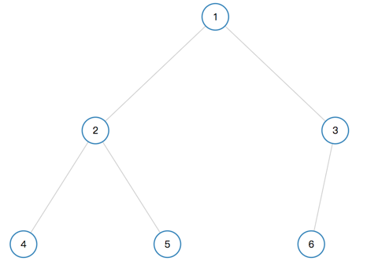

二叉树的广度和深度优先遍历（先序、中序、后序）
总结了一下二叉树的广度优先遍历、深度优先遍历的递归和非递归实现方式。
二叉树的遍历方式：
1、广度优先
按照树的深度，一层一层的访问树的节点
2、深度优先：
1)先序遍历：先访问根节点，再依次访问左子树和右子树
2)中序遍历：先访问左子树，再访问根节点吗，最后访问右子树
3)后序遍历：先访问左子树，再访问右子树，最后访问根节点
1、广度优先遍历

图1是一个二叉树，使用广度优先遍历的顺序应该是1、2、3、4、5、6。
思路是定义一个队列，先将root节点push进去作为初始值，并计算当前层所包含的节点数，root层就为1，将root从列表最前面弹出，然后访问root的left和right，将访问到的节点存入列表中。此时root层遍历结束，列表中存储的是下一层的所有节点，计算当前层所包含的节点数，然后从列表中依次弹出当前层的每个节点，并且访问每个节点的left和right节点，再存入列表中。代码如下：
1 | var BFS = function(root) { |
2、深度优先遍历
深度优先遍历分为先序遍历、中序遍历和后序遍历。下面每种遍历方式都会使用递归和迭代两种方法。
2.1 先序遍历
图1的二叉树使用深度优先遍历的结果是1、2、4、5、3、6。
迭代的思路是定义一个栈，先将root节点push进去作为初始值，检测栈是否为空，不为空，则弹出最上面的元素将其输出，然后如果该元素有左右节点则，先将右节点入栈，再将左节点入栈。代码如下：
1 | var DFS= function(root) { |
递归的代码如下：
1 | var DFS = function(root) { |
2.2 中序遍历
图1的二叉树使用中序遍历的结果是4、2、5、1、3、6。
迭代的思路是定义一个栈，先将当前节点的所有左侧子结点压入栈。然后再访问该节点和它的右子树。代码如下：
1 | var DFS = function(root) { |
2.3 后序遍历
图1的二叉树使用后序遍历的结果是4、5、2、6、3、1。
迭代思路是定义一个栈，先将当前节点的所有左侧子结点压入栈，现在要保证在访问当前节点的右子结点之后才能访问当前节点。所以每次从栈中拿出左侧节点时，都需要判断该节点的右子树是否存在或右子树是否被访问过，这里使用了一个preNode来记录刚被访问过的节点，这样就可以实现只有当前节点的右子结点访问完成，才能访问当前节点。代码如下：
1 | var DFS = function(root) { |
递归的代码如下：
1 | var DFS = function(root) { |